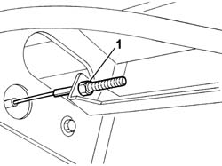
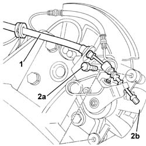
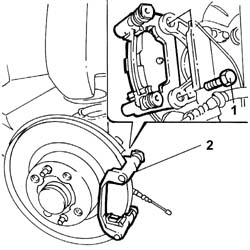

3310B57 REAR BRAKE CALIPER BRACKET (ONE), LEFT OR RIGHT - R.R.
- Path
- Procedures > 33 BRAKES > 3310 DISC BRAKES > 3310B REAR DISC BRAKES > 3310B57 REAR BRAKE CALIPER BRACKET (ONE), LEFT OR RIGHT - R.R.
- Kind
- repair procedure (removal / refitting; the operation number is the code)
- Applies to
- all engines; all production periods
- Interactive page
- https://sloeber94.github.io/elrnDB-fUlss/en/#/179007295
Applies to: all engines; all production periods
 Removing
Removing
 Refitting
RefittingPosition the vehicle on a lift.
See
Op. 4450B11 REAR WHEEL (ONE) - R.R.
1. Loosen the handbrake adjustment screw.

Applies to: all engines; all production periods
1. Release the handbrake cable and move it aside.
2. Undo the brake caliper fixing bolts (2a) and remove the caliper (2b).

Applies to: all engines; all production periods
Release the rear brake pads.
1. Undo the bolts fixing the rear brake caliper bracket.
2. Remove the caliper bracket.

Applies to: all engines; all production periods
Refitting
RemovingPosition the caliper bracket.
Tighten the bolts fixing the bracket to the stub axle to torque.
Component | Fastening | dia | Value daNm |
|---|---|---|---|
BRAKE CALIPER BRACKET ON STUB AXLE | Bolt | 9,5 |
Position the rear brake pads.
Place the brake caliper in position and tighten the fixing bolts to torque.
Component | Fastening | dia | Value daNm |
|---|---|---|---|
BRAKE CALIPER ON BRACKET | Bolt | 3,5 |
See
Op. 4450B11 REAR WHEEL (ONE) - R.R.
See
Op. 3380A04 HANDBRAKE - ADJUST TRAVEL
Remove the vehicle from the lift.
Check that the system is working.